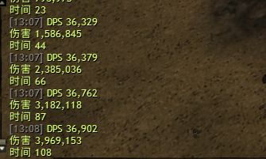

美服250延迟双枪炸弹包症状丁真标准桩三无 稳定36k+
这个小轮椅已经有不少人写了，优化了给在美服玩的朋友，我的队友已经用上都已经爱不释手了。
枪3，枪4|枪2黑=枪3，枪4，枪2，枪5，炸弹2，炸弹5，炸弹3，炸弹包=雷包5黑=切武器，炸弹包=雷包3黑=切武器，F1黑=F2黑=F3黑=超频纹章|释能阵列，翠玉迫击炮，翻滚重击，F1黑=F2黑=F3黑=超频纹章|
枪3,3,250|枪4,4,500|枪2黑|枪2,2,600,8,230,2,600|枪5,5,300|炸弹2,2,600|炸弹5,5,500|炸弹3,3,500|炸弹包|雷包5黑|切武器,`,220,5,200,3,200,0,1|雷包3黑|F1黑|F2黑|F3黑|超频纹章,0,0,,,,,,,,,,,,0,0,0,0,5|释能阵列,f2|翠玉迫击炮,f3,1|翻滚重击,f1,300,,,,,,,,,,,,0,0,0,0,5,触发,0,,1
[&DQMGJyY5RhUNGxQBEBsAAAcBAAAOGwAACRsAAAAAAAAAAAAAAAAAAAAAAAACNgAJAQA=]
全毒蛇 大地+折磨 碎层古物
取色说明：上面说的xx黑 都是取相应技能的极限接近十二点位置的黑色。炸弹包 这个取色取得是炸弹4的一点钟极限位置颜色，用于判断已经完全处于炸弹包位置，防止炸弹3或者炸弹5没打就提前切走。炸弹包不需要取色，在枪2的跟随按键8就是炸药包。切武器后面跟的0是精英技能。切武器取色是炸弹包下最左边切武器位置的随意颜色

评论列表（28）
大佬我现在只能稳定刚好35k 而且我机器人的f1 2 3取色了之后他不会按，我只能自动施法
我想问一下，这个国服用需要改哪些延迟方面的参数吗，还有就是我刚接触取色，不太明白就是这个12点黑 和这个1点黑这种叫法应该怎么去取色
大佬问下，为啥我的循环 执行了 炸弹2，炸弹5，炸弹3 后不会切回去的一直是再炸药包这里平A
@啊啊啊 [11:39:59][EXEC] 执行 | 阶段=起手循环 | 技能=枪3 | 按键=3 | 延迟=250ms | 次数=1
[11:39:59][EXEC] 执行 | 阶段=起手循环 | 技能=枪4 | 按键=4 | 延迟=500ms | 次数=1
[11:40:00][EXEC] 执行 | 阶段=主循环 | 技能=枪2 | 按键=2 | 延迟=600ms | 次数=1
[11:40:01][EXEC] 执行 | 阶段=主循环 | 技能=枪2 | 跟随按键=r | 延迟=230ms | 次数=1
[11:40:01][EXEC] 执行 | 阶段=主循环 | 技能=枪2 | 跟随按键=2 | 延迟=600ms | 次数=1
[11:40:02][EXEC] 执行 | 阶段=主循环 | 技能=炸弹5 | 按键=5 | 延迟=500ms | 次数=1
[11:40:02][EXEC] 执行 | 阶段=主循环 | 技能=炸弹2 | 按键=2 | 延迟=600ms | 次数=1
[11:40:03][EXEC] 执行 | 阶段=主循环 | 技能=炸弹3 | 按键=3 | 延迟=500ms | 次数=1
[11:40:03][EXEC] 执行 | 阶段=主循环 | 技能=超频纹章 | 按键=g | 延迟=0ms | 次数=1 | 触发链=F1黑=F2黑=F3黑=超频纹章
[11:40:07][EXEC] 执行 | 阶段=主循环 | 技能=枪5 | 按键=5 | 延迟=300ms | 次数=1
[11:40:08][EXEC] 执行 | 阶段=主循环 | 技能=枪2 | 按键=2 | 延迟=600ms | 次数=2
[11:40:08][EXEC] 执行 | 阶段=主循环 | 技能=枪2 | 跟随按键=r | 延迟=230ms | 次数=2
[11:40:09][EXEC] 执行 | 阶段=主循环 | 技能=枪2 | 跟随按键=2 | 延迟=600ms | 次数=2
[11:40:09][EXEC] 执行 | 阶段=主循环 | 技能=炸弹2 | 按键=2 | 延迟=600ms | 次数=2
[11:40:11][EXEC] 执行 | 阶段=主循环 | 技能=枪4 | 按键=4 | 延迟=500ms | 次数=2
[11:40:11][EX
@啊啊啊 退出雷包 取色雷包展开后的白色箭头，退出炸弹包，同样取，炸弹包展开后的白色箭头，或者是箭头周边的绿色区域，然后设置成切武器热键。这是2个判断，都设置成切武器热键。
@melis 他贴的BD是没用手雷包的啊0.0
@melis 找到原因了，作者说：切武器取色是炸弹包下最左边切武器位置的随意颜色。所以切武器我取的是左边切武器图标，而不是切炸弹包的图标。然后我刚刚发现，左边切武器那个图标当鼠标放上去的时候会高亮。我改成取切炸弹包的箭头后就OK了
@啊啊啊 这个问题只有使用一键取色功能才会出现
你好，炸弹技能打完后不会切包怎么回事？我都是严格按要求取色的。
@萌新223 枪2的第一个跟随按键就是炸弹包的按键
@kpd 我也一样的问题，炸弹技能用完后不会切武器0.0
炸弹包 这个取色取得是炸弹4的一点钟极限位置颜色，炸弹包不需要取色。这两句话是怎么同时出现的？应该怎么取色？
@时钟 还有标题是炸弹包丁真怎么出现了雷包的取色选项？bd也没有雷包，不太明白
@时钟 第一个炸弹包是指循环中炸弹包这个判断条件的取色（比如“炸弹包=雷包3黑=切武器”），取的是炸弹4的颜色，对应的切武器，取的是炸弹包状态下切武器位置的颜色。第二个炸弹包是说切换到炸弹包不需要取色，通过枪2跟随技能实现的（作者的快捷键是8）。雷包x黑，其实就是武器x黑，你管他是不是雷包，反正取的是黑色。
@时钟 雷包就是纯我写错了 我才发现 哈哈 另一个朋友说的很对你可以看一下
这个老哥的循环论坛建议加精功能，说能打多少就打多少不虚标夸大
@zz456 过誉了，我写的都是循环很工整，没啥多重判断条件的职业，网站还是有不少大神的
大佬如果是欧服150-180延迟大概需要改哪里？
@sky 最简单的判断方法就是 ，每次切包和切回武器之前 ，前一个技能，有没有显示cd，如果显示了cd那就说明切晚了， 每次切到炸弹包看看有没有直接放了炸弹2，如果没有直接放炸弹2 而是等完全切完了才放的炸弹2，那就说明切包的延迟太低了
8是什么技能？
@北烈马 很明显是手雷包
@凯珊历飞雨 对哦，脑筋转不过来了
我+16的恶意菜打34啊，哪里出错了，所有技能也都放
@A85759997 能录个视频吗 要不然不知道怎么说
@kpd 16灌注加食物扳手现在能打38
@A85759997 最简单的判断方法就是 ，每次切包和切回武器之前 ，前一个技能，有没有显示cd，如果显示了cd那就说明切晚了， 每次切到炸弹包看看有没有直接放了炸弹2，如果没有直接放炸弹2 而是等完全切完了才放的炸弹2，那就说明切包的延迟太低了
这个轮椅有点说法，实测三无，36.2k，非常推荐
@流沙 这么叼吗